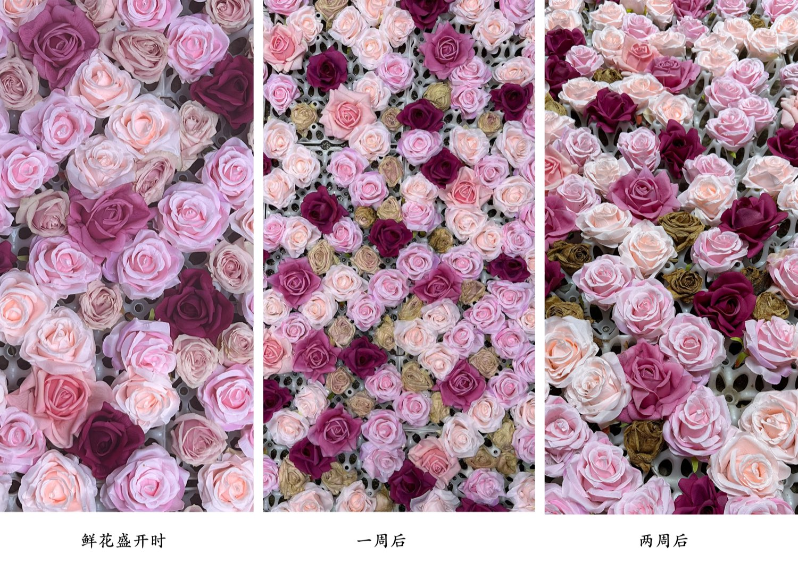
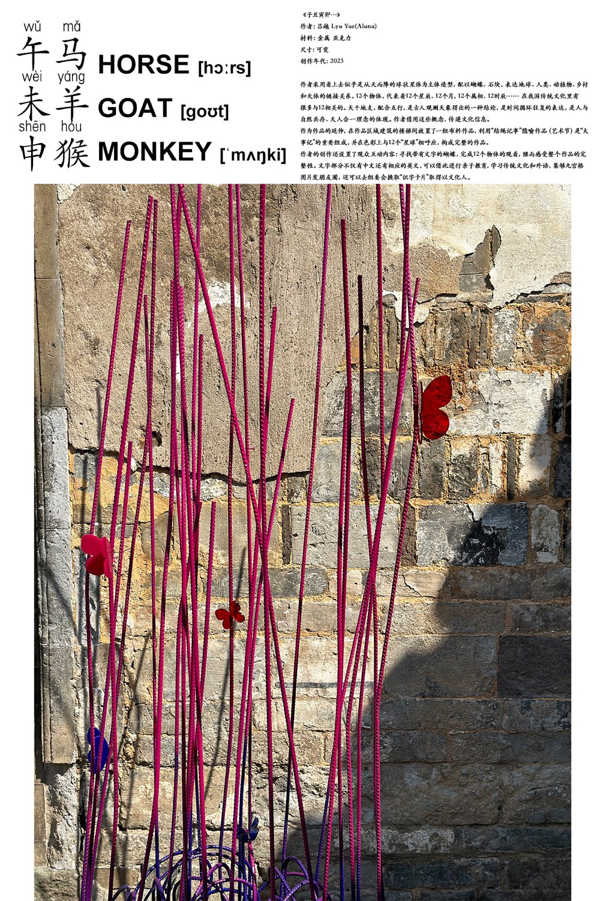
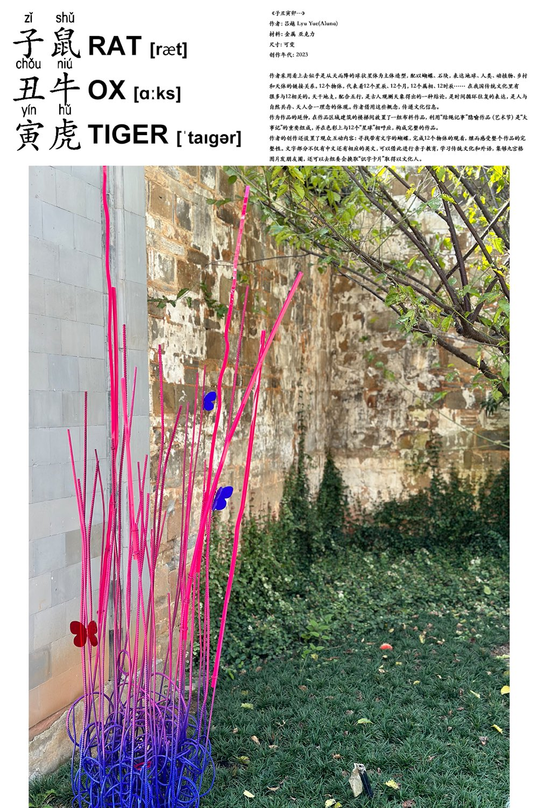
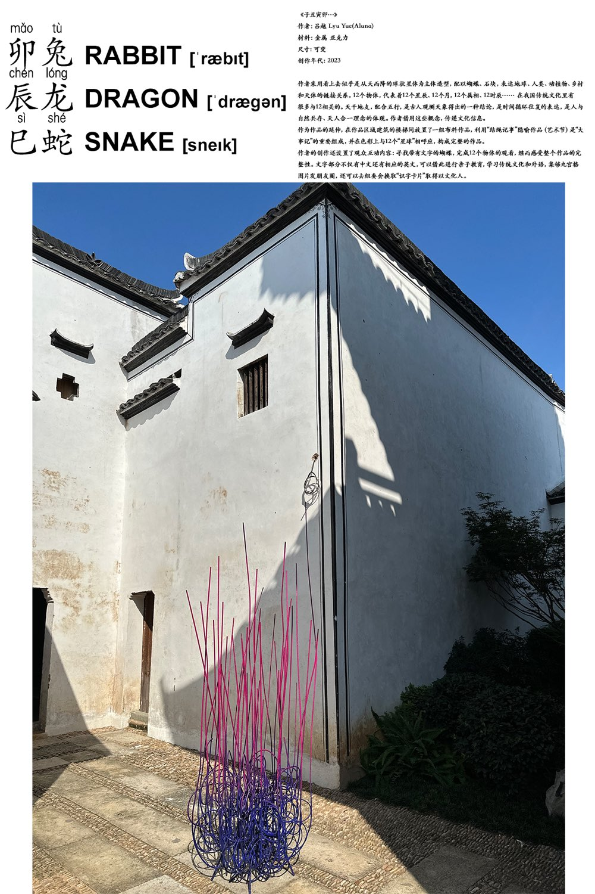
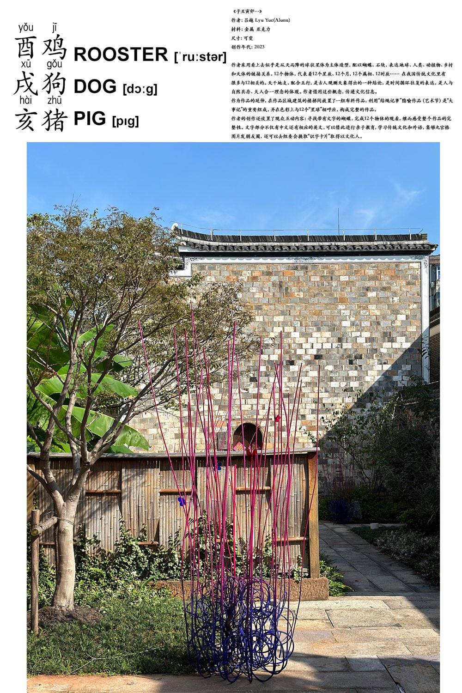

2023 Longyou Liquid Threads Art Festival | Residency Project with Artist Lyu Yue
In the autumn of 2023, the first Longyou Liquid Threads Art Festival opened in Longyou, Zhejiang, under the theme Myriad Growth. Works were spread across the old town of Danan Gate and the village of Xikou, and the festival ran from 26 September to 26 December. As assistant to artist Lyu Yue, I stayed in Longyou during the residency. I helped install her works, photographed them, and edited the texts and images for the project. I also took part in making her work Time Will Tell You and The Twelve.

Time Will Tell You
For Time Will Tell You, I worked with the team to layer real flowers with artificial ones. The real flowers slowly wither, while the fake ones never change. Standing in front of the work, it is hard to tell which is which at first glance. Only time will tell you the answer.

The Twelve
The Twelve is made of iron rings in different sizes, shaped like a falling meteor. Blue and violet rings coil on the ground, while pink lines shoot upward, as if a meteor had just landed between the old walls of Longyou. To me, the Earthly Branches were the way ancient people counted time, and a meteor is light that disappears in a moment. The work holds a long history of time and one brief instant in the same frame.




Photography & Editorial
Photography was the part I enjoyed most. As a theatre designer, I am used to working in a space where light is designed. In Longyou, the light came from the sun, and it changed every hour. To catch the best shadow on an old wall, I often waited in the same spot for a long time. I found that an outdoor installation is very much like a stage: the work is the performer, the old houses are the set, and the sunlight is the lighting designer. This lighting designer, though, never followed my cues.
When editing the texts and images, I paired each photograph with the twelve zodiac animals in Chinese, pinyin, and English. I hoped that everyone, whether local elders, children, or international visitors, could find their own way into the work.
During the residency, I also saw the works of many other artists. Fibre art, moving image, and installations were scattered through the alleys, villages, and along the river. Art was not kept inside a white cube. It was really growing out of the land. Perhaps this is what Myriad Growth means: each work, in its own way, has a conversation with the place, its people, and time.